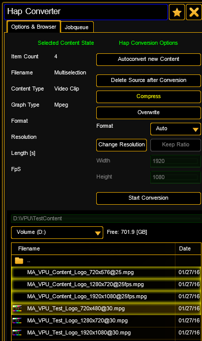
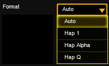
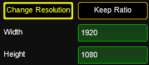
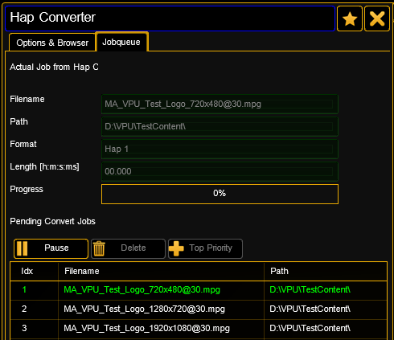
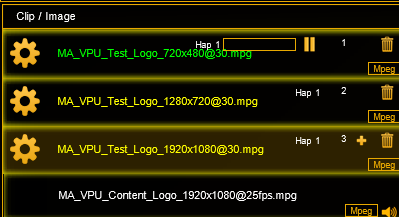

Hap Content Converter
Hap is a video codec for fast decompression on modern graphics hardware.
The Hap codec project is open-source, licensed under a FreeBSD License. This project was originally written by Tom Butterworth and commissioned by VIDVOX, 2012.
Instead of using the CPU to decode video frames, Hap passes compressed image data directly to the graphics card to perform hardware accelerated decompression of movies during playback. By shifting this burden from your CPU to the GPU, Hap makes it both possible to use more movies and work at higher resolutions than typical CPU-bound codecs.
There are three different Hap codecs to choose from:
-Hap 1 offers the lowest data rates for playing back the most clips at a time
- Hap Alpha is similar to Hap 1 with support for transparency
- Hap Q offers improved image quality at a higher data rate
VPU offers the possibility to convert content directly from many formats to Hap. Therefore the build in 'Hap Converter' is used:
|  |
The upper part describes the settings of the Hap converter.
Workflow:
- Browse to the source directory
- Select the files to be converted to Hap codec in the lower part. Multiselection is possible
- Press 'Start conversion' button
- You can also convert video clips that are part of your show. Select the channel sets at the content editor and press the 'Start conversion' button.
|
|
Hap Coversion Options:
|
|
|
|
If new content is added it always will be converted into Hap codec.
|
|
Compress the Hap format internal with dynamic bit rate. If compress is 'off' you get a constant bit rate but larger files. |
 |
The source files will be deleted after the successfully conversion into Hap format. |
|
Overwrites an already existing item |
|  |
Select the codec type:
- Auto converts a non Hap clip to Hap 1. If a Hap clip inside an avi-container is selected, the format of the Hap clip (e.g. Hap Q) will maintained unchanged.
- Hap 1 offers the lowest data rates for playing back the most clips at a time
-Hap Alpha is similar to Hap with support for transparency
- Hap Q offers improved image quality at a higher data rate |
|  |
You can change the resolution of the converted video. To keep the aspect ratio select the 'Keep Ratio' button and enter either the width or height.
Note: Be aware that if you have changed the resolution the original cannot be restored! |
|
By pressing this button the selected files are copied into the Jobque and the conversion process starts. |
|
Hap Converter Jobque:
|
|
 |
After starting the conversion job the selected files occur in the jobque. |
|  |
If the content is dropped into the image list and the conversion starts a progress bar informs about the status of conversion. |